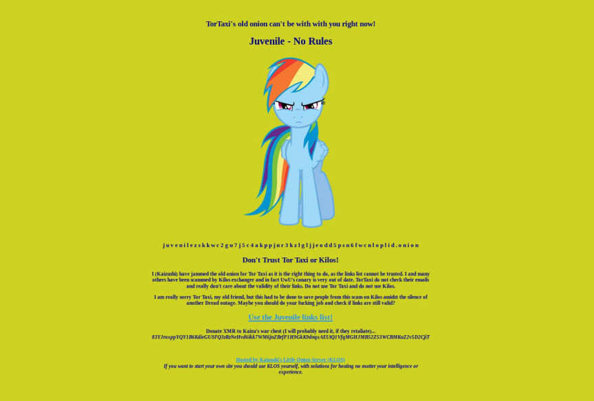

Tor.taxi linked with Kilos exit scam
The concerned address is as follows, with archived proof here and here.
tortaxi7axhn2fv4j475a6blv7vwjtpieokolfnojwvkhsnj7sgctkqd.onion

Screenshot taken from tor.taxi's old domain
Tor.taxi admins took advantage of Dread downtime and further advocated Kilos after users pointed out that the exchange was exit scamming. When it's finally apparent that Kilos was conducting an exit scam, and that tor.taxi is obviously covering up it's fraudulent activities, the index then seeked refuge by posting an article in one of the darknet news site (tortimes.com) it controls. It then proceeded reluctantly to issue a warning on it's website.
The following is a blog post made by Kaizushi
http://kaizushih5iec2mxohpvbt5uaapqdnbluaasa2cmsrrjtwrbx46cnaid.onion/page.php?q=blog&b=angry-pony
Quote:Post Content
I came in like a wrecking ball! Yes, I did just jam the old onion for Tor Taxi. But I defend it, so let's start at the beginning: I just wanted to convert my XMR into some BTC to enjoy the spoils of war. I have been using Infinity since I shilled it on Dread last year, but was having an XMR outage. I went back to Kilos and used their link on Tor Taxi. I got fucking screwed by doing that, and checked some things. One big thing is that it's admin UwU's canary was severely out of date. It was posted on the 10th of December, and promises a new canary at least every 14 days. For some reason, Tor Taxi does not check such things. My contacts tell me Kilos has been scamming for about 7 days. This is bullshit negligence, and Tor Taxi should be ashamed of himself for this. I did this because I had to do something about this situation so that people know about Kilos, their scamming, and absent administrator. And yes, I actually do onion jamming for money but I just have one rule: it has to be the onion of a lazy dickhead! Tor Taxi, you fucking lazy dickhead! I did wait until 24 hours after emailing Tor Taxi without reply before launching my onion jammer. Oh, and I've had their onion keys since their beginnings. They kept using them for a very long time, because apparently 301 redirects are too hard. Not for me, so it now redirects to my notice.
Considered a rising star, tor.taxi is now facing a setback on its reputation and the community's confidence. What the admins do remains to be seen.
For transparency regarding darknetlive ownership change, please view previous post